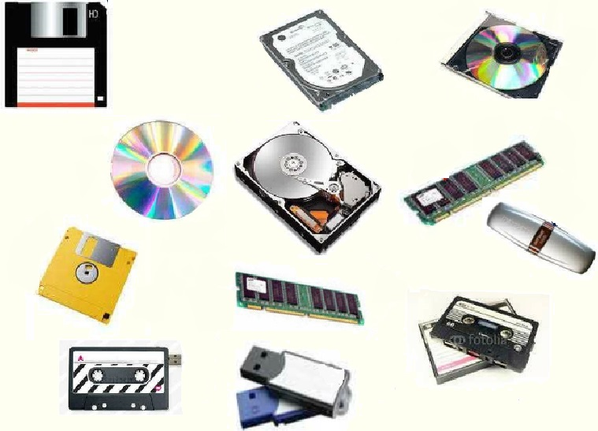

Главная страница
Доброго времени суток дорогие пользователи. Мы рады приветствовать вас на нашем сайте на котором вы сможете найти информацию по очень обширной и интересной теме такой как память компьютера. Как мы все, а может быть и не все, знаем, что существует несколько разновидностей памяти – внешняя и внутренняя. С каждой из них вы можете ознакомиться в соответствующих разделах данного сайта. В данный момент вы находитесь на главной странице. Если вдруг найдете какую-то ошибку, то опишите проблему в разделе "Сообщить о проблеме".
Разберемся, что же такое компьютерная память.
Компьютерная память (устройство хранения информации, запоминающее устройство) — часть вычислительной машины, физическое устройство или среда для хранения данных, используемая в вычислениях в течение определённого времени. Память, как и центральный процессор, является неизменной частью компьютера с 1940-х годов. Память в вычислительных устройствах имеет иерархическую структуру и обычно предполагает использование нескольких запоминающих устройств, имеющих различные характеристики.
Задачей компьютерной памяти является хранение в своих ячейках состояния внешнего воздействия, запись информации. Эти ячейки могут фиксировать самые разнообразные физические воздействия. Они функционально аналогичны обычному электромеханическому переключателю и информация в них записывается в виде двух чётко различимых состояний — 0 и 1 («выключено»/«включено»). Специальные механизмы обеспечивают доступ (считывание, произвольное или последовательное) к состоянию этих ячеек.
Процесс доступа к памяти разбит на разделённые во времени процессы — операцию записи (сленг. прошивка, в случае записи ПЗУ) и операцию чтения, во многих случаях эти операции происходят под управлением отдельного специализированного устройства — контроллера памяти.
Также различают операцию стирания памяти — занесение (запись) в ячейки памяти одинаковых значений.